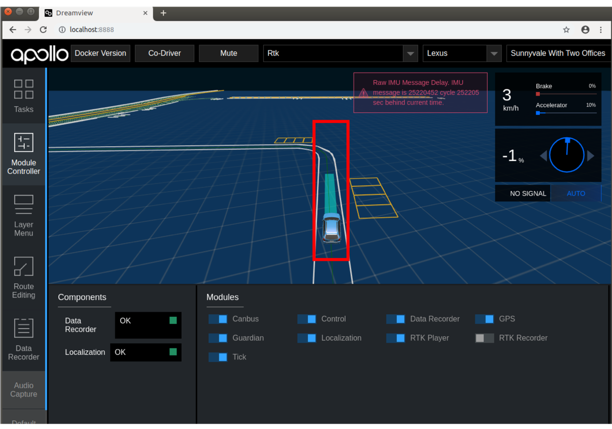

How to Leverage Apollo’s RTK mode¶
RTK mode helps developers and partners to better test your perception and control modules without needing to check the planning decisions.
Process to use RTK Mode¶
Step 1: Mode Selection¶
Build Apollo and Launch DreamView on http://localhost:8888
Set the mode as
RTK, and select the vehicle type and map for your specific case

Step 2: Module Initialization¶
Select
Module Controllerfrom the left-side of DreamviewEnable all modules under the RTK mode except
RTK PlayerandRTK Recorderfrom the bottom right-hand side of the windowUnder the Components section, pause until the
Data RecorderandLocalizationboth displayOKstatus.
Note: to activate the localization module with accurate position signal shown on the Dreamview, the driver may need to manually drive the car around your parking lot several times.

Step 3: Enable RTK Recorder¶
Drive the car to the beginning of the desired testing path. The car should currently be in
Manualmode.Enable the
RTK recorder.
From this moment on, Dreamview enters thePath Recordingmode

Step 4: Manual Path Generation¶
Manually drive the car along the desired test path. This path will be recorded automatically
After reaching the end of the desired path, it is important to remember that you must disable the
RTK Recordermodule before anything elseManually drive back to the initial position with both
RTK PlayerandRTK Recorderoff.
Step 5: Enabling RTK Player¶
Enable the
RTK player. The driver should be able to see the recorded path trajectoryThe driver can then decide if he needs to adjust the car’s position to record the path better
Once ready, the driver may click on
Start Auto, and the car will be expected to track the recorded path automatically
Start Auto refers to putting the car into autonomous mode. This can be done by putting the car in neutral and clicking on the Start Auto button present in the Tasks window.
When path tracking is complete, the driver may disable the
RTK playeror directly return back to the start point for the second/third/… run if applied

Note:
The blue line in the above image is the recorded path
¶
The recorded path will be never be cleared unless you re-record the path, so feel free to repeat the auto-mode path-tracking tests as many times as you may need
If a new path is needed, simply repeat steps 3 - 5 to record the new path. The newly recorded path will overwrite the old path automatically.